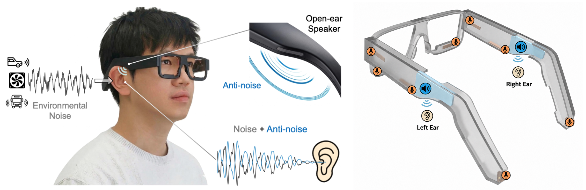

Active Noise Cancellation on Glasses

Noise
Music
Mic
Speaker
Ear
left ear reduction
right ear (mirror)
Live speech-to-text (Whisper tiny.en, in-browser)
Press Play and transcription starts automatically: a small Whisper model (~75 MB, downloaded once) transcribes the at-the-ear signal live. Toggle ANC on/off and watch how many words it can recover.
Latest window
Live spectrum (left ear)
Before ANC
After ANC
Spectrogram (left ear)
energy
loud
Time domain (left ear)
Before ANC
After ANC
What the active mics see